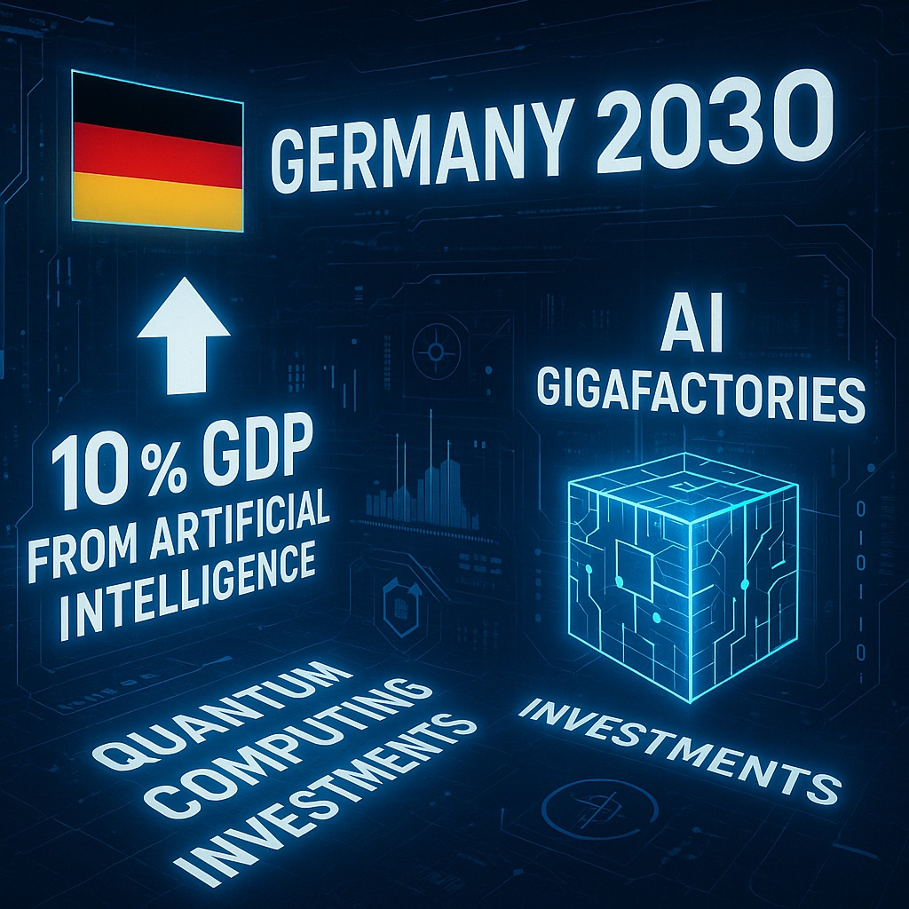
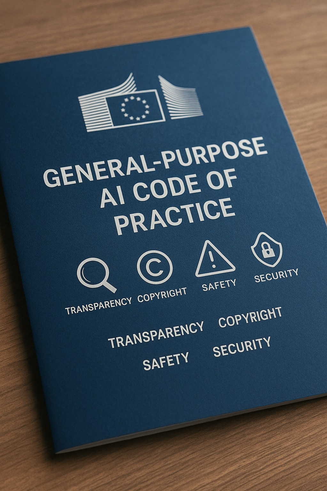
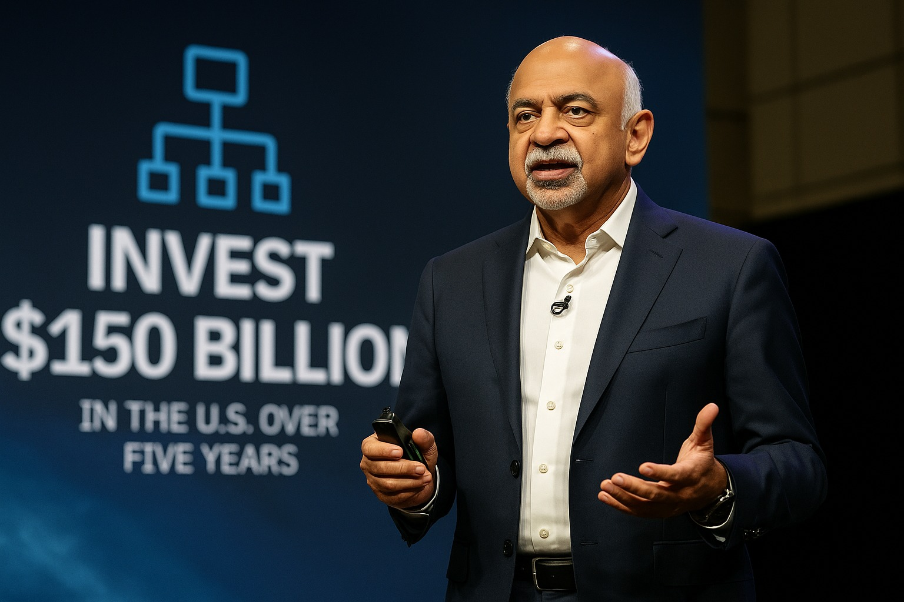
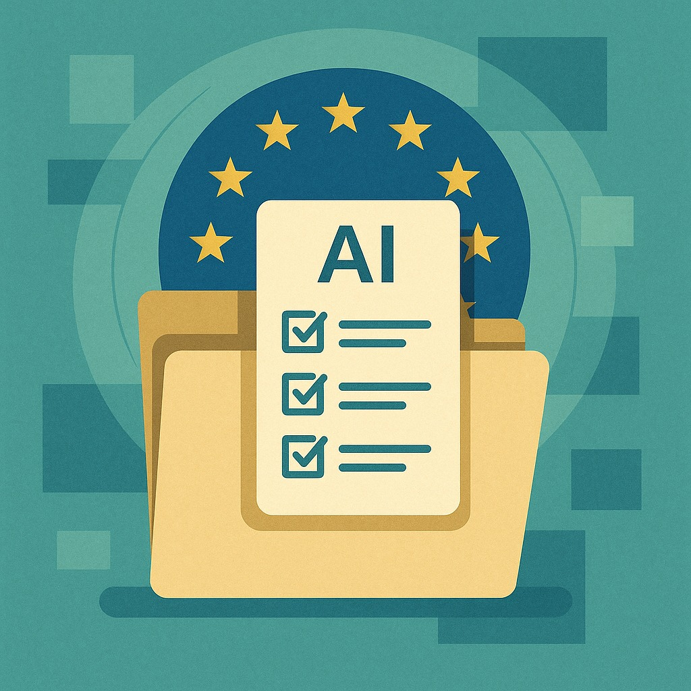

News
Stay informed with the latest developments in technology, digital innovation, and AI. Our News section highlights key industry trends, regulatory updates, and breakthroughs relevant to your business.

15 July 2025 – Germany Launches Ambitious “AI Offensive” for 2030 Growth
The German government has unveiled a national AI strategy aimed at making artificial intelligence a key economic
driver by 2030. Dubbed an “AI offensive,” the plan targets 10% of Germany’s GDP to be AI-based by
2030, seeking to narrow the technology gap with the US and China. The draft strategy outlines
investments in large-scale AI processing centers (“AI Gigafactories”) coordinated with industry
and federal states. Brussels is backing infrastructure expansion with €20 billion earmarked by
the European Commission for AI/data facilities. The German plan also sets goals in quantum computing (two
error-corrected quantum computers by 2030) and emphasizes public-private cooperation. The Cabinet is expected to
approve the strategy within the month, underscoring Germany’s commitment to AI-driven innovation.
Sources: Handelsblatt, European Commission

10 July 2025 – EU Code of Practice Guides General-Purpose AI Compliance
The European Commission has published a General-Purpose AI Code of Practice to help providers
of large AI models align with upcoming EU regulations. Drafted by 13 experts with input from over 1,000
stakeholders, the voluntary Code offers guidelines on transparency, copyright, safety, and
security for foundation-model AI. It supports compliance with the EU’s AI Act rules
taking effect in August 2025, which will require makers of broadly-used AI systems to implement risk assessments
and transparency measures. Companies that sign the Code and follow its recommended practices will enjoy greater
legal certainty and reduced bureaucracy. This initiative reflects Europe’s push for responsible AI
innovation, ensuring powerful AI models are safe, transparent, and trustworthy.
Sources: European Commission, TechCrunch, Euractiv
30 June 2025 – Global Forum Urges Action on Ethical AI Cooperation
At UNESCO’s 3rd Global Forum on AI Ethics in Bangkok, international leaders called for turning
AI ethics principles into concrete actions. The forum highlighted progress since UNESCO’s landmark 2021 AI
Ethics Recommendation, noting that dozens of countries have begun integrating ethical frameworks and conducting
AI readiness assessments. New global cooperation platforms were announced, including a Network of AI
Supervisory Authorities and a civil society & academia network, to strengthen cross-border governance
of AI. A key message was that international and regional collaboration is urgently needed to
ensure AI develops in a human-centric, responsible manner. Officials stressed moving beyond
principles: implementing oversight mechanisms and sharing best practices so that ethical guidelines lead to
real-world impact.
Sources: UNESCO, UN News
15 June 2025 – AI Industry Report Shows China Closing the AI Gap
A new annual State of AI report reveals that the global AI landscape is more competitive than
ever. According to the analysis (from Stanford’s HAI), high-performing Chinese AI models have
sharply increased in number and quality, rapidly challenging US leadership in the field. The
performance edge between top American and Chinese models is now narrowing, as evidenced by benchmark tests and
research output. Additionally, 2024 saw breakthrough progress in efficient AI systems, with
smaller, optimized models matching the capabilities of previous large “behemoth” models. These trends indicate a
tightening AI race, driven by China’s heavy R&D investments and talent growth. Experts say businesses worldwide
should watch this evolving balance, as it may spur faster innovation and more diverse AI solutions.
Sources: Stanford HAI, MIT Technology Review
23 May 2025 – Microsoft Empowers Businesses with Custom AI Agents
At its Build 2025 conference, Microsoft announced new tools for organizations to tailor AI to their
needs. The company introduced Microsoft 365 Copilot “Tuning”, a low-code service
that lets enterprises train Microsoft’s AI Copilot on their own data, workflows, and style guides. This enables
companies to create domain-specific AI assistants – for example, a law firm can generate an agent that drafts
documents in the firm’s preferred format and tone. Microsoft also unveiled multi-agent
orchestration in Copilot Studio, allowing multiple specialized agents to collaborate on complex
tasks. These updates, delivered within Microsoft’s secure cloud boundary, let businesses harness AI more
accurately and securely.
Sources: Microsoft Blog, The Verge, Ars Technica

6 May 2025 – IBM Integrates AI Agents and Invests $150 B in Tech Expansion
IBM is doubling down on enterprise AI with new integration tools and a major investment pledge. CEO
Arvind Krishna outlined a strategy to help clients orchestrate fleets of AI
“agents” – software bots from IBM and third-parties – across business applications. Unveiled at the
annual IBM Think conference, the approach allows companies to plug in AI solutions from Salesforce, Workday,
Adobe, and others into IBM’s platform, while quickly building their own agents using IBM’s Granite AI models.
The company also announced it will invest $150 billion in the US over five years to strengthen
its manufacturing and R&D in mainframes, artificial intelligence, and quantum computing.
Sources: IBM Newsroom, CNBC, TechCrunch
10 April 2025 – EU Issues Guidelines for Responsible Generative AI Research
The European Commission has published new guidelines on the responsible use of generative AI in
research, aiming to foster ethics and transparency in scientific innovation. The recommendations
emphasize four core principles for researchers: Reliability, Honesty, Respect, and
Accountability. This means AI models used in research should be robust and unbiased, methods and data
handling should be transparent and fair, and privacy, intellectual property, and human dignity must be
safeguarded. Researchers are urged to clearly label AI-generated content and ensure human oversight in study
design. These guidelines, while non-binding, are intended to shape responsible AI innovation in
academic and applied fields.
Sources: European Commission, Nature, Science Business
9 April 2025 – Google Unveils ‘Ironwood’ AI Chip Delivering 10× Performance
Google has revealed Ironwood, its seventh-generation Tensor Processing Unit
(TPU) custom chip, designed to power the next wave of AI applications. Announced at the Google Cloud
Next ’25 event, Ironwood is purpose-built for running advanced AI inference (“the age of inference”) with
unprecedented scale and efficiency. A full Ironwood pod links 9,216 chips together to provide
42.5 exaflops of compute – over 24 times more processing power than the world’s largest supercomputer today.
Google says Ironwood offers a 10× performance boost over its previous TPUs by improving energy
efficiency and memory bandwidth.
Sources: Google Cloud Blog, Wired, AnandTech
31 March 2025 – Google Opens Advanced Gemini AI Model to All Users
Google has made its latest Gemini 2.5 Pro AI model – known for enhanced “reasoning”
capabilities – freely available for anyone to try. This comes just days after the model’s preview release to
paying subscribers. The Gemini 2.5 Pro incorporates step-by-step logical reasoning
(“chain-of-thought”) that significantly improves performance on complex tasks. Google reports
the model now leads on several language-model benchmarks. While usage is currently rate-limited, opening access
widely marks a shift toward more inclusive AI development. Google also plans to integrate this advanced model
into its mobile Gemini app and developer tools.
Sources: Google DeepMind, TechCrunch, The Verge

5 March 2025 – EU Updates Model Contracts to Ensure Trustworthy AI Procurement
The European Commission has released an updated set of Clauses for AI procurement (MCC-AI),
giving public agencies a template to demand responsible AI practices from vendors. The clauses
align with the EU’s draft AI Act, mirroring obligations for “high-risk” AI systems (e.g. in
hiring or healthcare). They cover key areas such as risk assessment, data governance, transparency,
human oversight, and cybersecurity measures. The MCC-AI package includes a full version for high-risk
AI, a lighter version for lower-risk cases, and detailed guidance. While designed for public-sector contracts,
these standards can be adopted by companies as well to foster compliance and trust.
Sources: European Commission, EUR-Lex, EU Digital Strategy Portal
February 15, 2025 – Google Revises AI Ethics Guidelines
Google has updated its AI ethics principles, removing earlier explicit commitments to avoid
certain high-risk applications. The new version emphasizes broader terms like “responsible AI” and
“collaboration,” omitting previous categorical restrictions. According to Google, this shift is necessary to
remain competitive and to support democratic values in the evolving AI ecosystem. Critics, however, argue that
the changes weaken the company’s previous stance on harm prevention and transparency. The update reignites
industry-wide debate on how ethical frameworks should be implemented and maintained.
Sources:
MIT Technology Review,
The Verge
February 1, 2025 – EU’s AI Act Bans “Unacceptable Risk” Systems
On February 2, 2025, the EU AI Act officially begins enforcement of key restrictions on AI
applications considered to pose an “unacceptable risk.” Banned systems include those that manipulate user
behavior or implement harmful social scoring. Biometric surveillance in public is also prohibited. This
regulation aims to preserve fundamental rights such as privacy and equality and sets a strong precedent for
global AI governance. Companies that violate these rules face fines of up to 7% of global turnover.
January 15, 2025 – OpenAI Plans $40 Billion Investment Round
OpenAI is planning a new $40 billion funding round, with SoftBank potentially contributing $25
billion. The funding would support a $500 billion initiative to build a next-generation AI infrastructure
platform called “Stargate.” This project, aimed at scaling compute power for future AI models, highlights the
intensifying race to build global AI capabilities. If finalized, the deal could mark one of the most significant
AI infrastructure investments to date.
January 1, 2025 – OpenAI Launches “o3-mini” Reasoning Model
OpenAI has released “o3-mini,” a streamlined AI model optimized for transparency and
logic-based reasoning. It processes tasks about 24% faster than previous versions and includes visible
step-by-step outputs. The model is available to free ChatGPT users with usage limits and can also be accessed
via API. This release represents a shift toward more transparent, efficient AI models for both consumer and
enterprise use cases.
Sources:
OpenAI Blog,
TechCrunch
December 15, 2024 – Meta Fined €251 Million for GDPR Violation
Ireland’s data regulator has fined Meta €251 million following a long-standing privacy breach
involving Facebook. The 2018 issue exposed personal data of 29 million users, including contact details and
locations. Meta was found to have insufficiently implemented data protection measures and failed to report the
breach transparently. This decision reinforces the EU’s strict enforcement of data compliance
rules under GDPR.
December 1, 2024 – MIT Develops Fairness-Enhancing AI Training Method
Researchers at MIT have introduced a new method to reduce bias in machine learning models.
The approach down-weights specific training data points that reduce performance for underrepresented groups,
without degrading overall model accuracy. This method offers a targeted, scalable alternative to conventional
dataset rebalancing and shows promise for enhancing fairness in real-world AI deployments.
Sources:
MIT News,
Nature Machine Intelligence